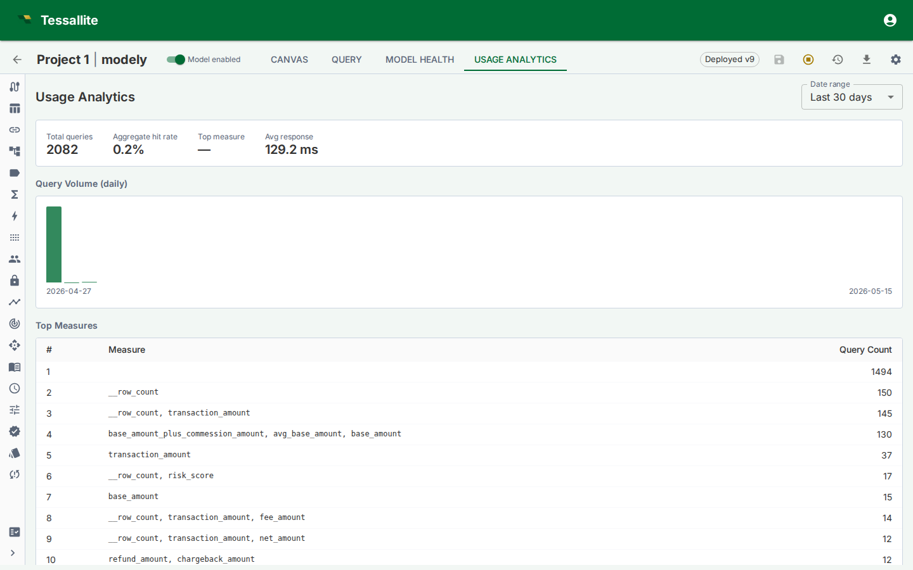

Usage Analytics

What this covers
Usage Analytics is a read-only Model Builder tab that shows how a deployed model is being queried. It helps modellers understand adoption, latency, aggregate hit rate, common measures, and query patterns that may deserve new aggregates or pockets.
What to look at first
| Metric | What it tells you |
|---|---|
| Query volume | Whether the model is actively used and when traffic peaks. |
| Aggregate hit rate | How often queries are served from aggregate tables instead of live source scans. |
| Average or median latency | Whether users experience the model as interactive. |
| Top measures | Which business metrics are driving workload. |
| Top aggregates | Which acceleration objects are earning their storage and refresh cost. |
| Acceleration rate | The overall share of query work served from an aggregate or pocket instead of scanning the source. A rising rate means your acceleration objects are doing more of the heavy lifting; a falling one is a prompt to look at what stopped matching. |
| Top missed measures | The measures most often requested by queries that still fell through to the source. Anything already served from an aggregate or pocket is not counted here, so this list points straight at what is worth accelerating next. |
| Miss patterns | Repeated live queries that the optimizer may be able to accelerate. |
How to use the tab
Start with the trend, then inspect the detail. A high query volume with a low aggregate hit rate usually means the model is valuable but under-accelerated. A low query volume with many aggregates suggests over-building or a model that has not been adopted. A few top measures dominating traffic should guide aggregate grains and refresh SLAs.
Usage Analytics is also useful after a deploy. Compare the post-deploy latency and hit-rate movement with the Model Health cold-start section. If a new model version caused more live routing, inspect query misses and aggregate validity.
Common decisions
| Observation | Likely action |
|---|---|
| High live-route count on the same grain | Create or approve an aggregate for that grain. |
| Queries repeatedly filter to the same narrow subset | Consider a pocket table. |
| One aggregate has no hits over the evaluation window | Retire it or let the lifecycle policy remove it. |
| A newly deployed model is slower than the previous version | Check invalid aggregates, changed dimensions, and route badge reasons. |